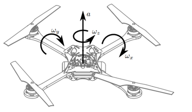

Quadrotor
Example
Quadrotor/
Where you can find this quadrotor
M. Hehn and R. D’Andrea, “A flying inverted pendulum,” ICRA, Shanghai, China, 2011, pp. 763–770.
Problem Description

-
The state vector of the quadrotor is x = [X,\dot{X} , Y ,\dot{Y} ,Z ,\dot{Z} ,\gamma ,\beta ,\alpha ]^{T}\in\mathbb{R}^{9}, where (X,Y,Z) and (\gamma,\beta,\alpha) are the position and angles of the quadrotor, respectively. The state is bounded by [-1,-1,-1]^T \leq [\dot{X},\dot{Y},\dot{Z}]^T \leq [1,1,1]^T.
-
The input vector is u=[a,\omega_{X},\omega_{Y},\omega_{Z}]^T, where a represents the thrust and (\omega_{X},\omega_{Y},\omega_{Z}) the rotational rates. The control input is bounded by [0,-1,-1,-1]^T \leq u \leq [11,1,1,1]^T.
-
The dynamics of the quadrotor are given by the following equations:
The task is to control the quadrotor to track a given position reference under a variable prediction horizon.
OCP in ParNMPC
The state constraints are softened by introducing slack variables \dot{X}_s, \dot{Y}_s, and \dot{Z}_s.
The underlying OCP defined in ParNMPC is formulated as:
- State: x=[X,\dot{X} , Y ,\dot{Y} ,Z ,\dot{Z} ,\gamma ,\beta ,\alpha ]^T.
- Input: u=[a,\omega_{X},\omega_{Y},\omega_{Z},\dot{X}_s,\dot{Y}_s,\dot{Z}_s]^T with u_{max}=[11,1,1,1,\infty,\infty,\infty]^T and u_{min} = [0,-1,-1,-1, 0, 0, 0 ]^T.
- Parameter: p=[X_{ref},Y_{ref},Z_{ref},\gamma,T]^T, where \gamma>0 is the barrier parameter.
- Cost function L(u,x,p) = L_{tracking}(u,x,p) + L_{penalty}(u,x,p), where L_{tracking}(u,x,p) = \frac{1}{2}\|x-x_{ref}\|_{Q}^2+\frac{1}{2}\|u-u_{ref}\|_{R}^2 with x_{ref}=[X_{ref},0,Y_{ref},0,Z_{ref},0,0,0,0]^T, and L_{penalty}(u,x,p)=1000(\dot{X}_s^2 +\dot{Y}_s^2 + \dot{Z}_s^2) is the penalty function.
- Polytopic function (linear constraint): G = [\dot{X} - \dot{X}_s, \dot{X} + \dot{X}_s,\dot{Y} - \dot{Y}_s, \dot{Y} + \dot{Y}_s, \dot{Z} - \dot{Z}_s, \dot{Z} + \dot{Z}_s]^T with G_{max}=[1,\infty,1,\infty,1,\infty]^T and G_{min} = [-\infty,-1,-\infty,-1,-\infty,-1]^T.
- f(u,x,p) is shown before.
- Prediction horizon T.
- Number of the discritization grids N=40.
- Discretization method: Euler.
Closed-loop Simulation using ParNMPC
Step 1. NMPC problem formulation
See Workflow of ParNMPC > NMPC Problem Formulation.
Example
Quadrotor/NMPC_Problem_Formulation.m
Step 2. Code generation and deployment in Simulink
See Workflow of ParNMPC > Code Generation and Deployment > Simulink.
-
Code generation
Example
Quadrotor/Simu_Simulink_Setup.m -
Deployment
Example
Quadrotor/Simu_Simulink.slx